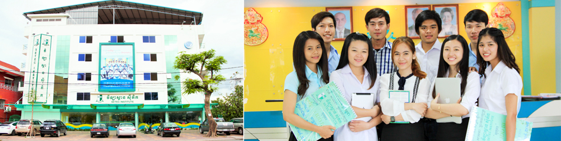
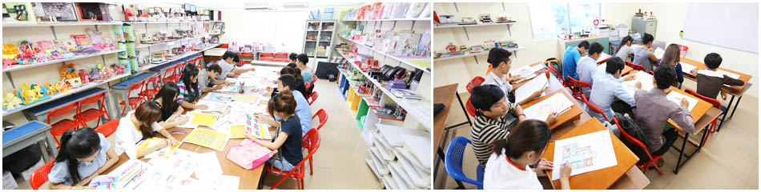
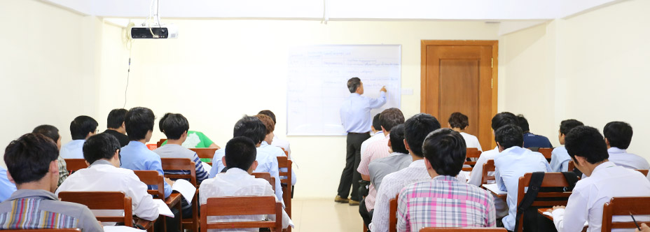
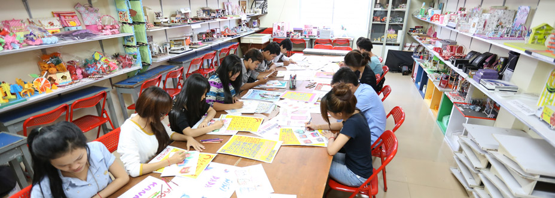
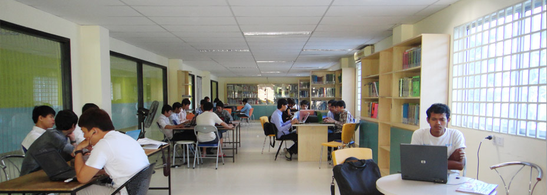

LECTURE ROOMS, COMPUTER ROOMS, DESIGN ROOMS, IT ROOMS, LIBRARY ROOMS, CANTEEN, CAR PARK.
LECTURE ROOMS
Lecture rooms are equip with air-cons and LCD projector to provide the best learning aids available to the students. The computer in the Lecture are also connected to the Internet and academy networking for most effective learning.

COMPUTER ROOMS
Our computer labs are equipped with air conditioning to provide student an comfortable and spacious learning environment.
All computers are equipped with the latest computer technology to provide our students with the best training aids.

DESIGN ROOMS
The design rooms are equipped with different traditional and modern tools in different rooms for the different units learning purposes.

IT ROOM
Students who are interested to learn more on repairs and networking can do so in the IT room after school hour. We provide free repair services (excluding parts) to all students.

Library ROOM
Our library provides students with a comfortable and cooling environment with approximately 5000 books and magazines. These books are purchase externally from Singapore, Thailand, USA and Australia. With the modern technology, e-books are also available for the students

***SETEC Institute provided free WI-FI for students too.
CANTEEN
We have a canteen at the roof top for all staff, lecturers and students. The environment is clean and the food is nice and affordable

CAR PARK
We have a basement car park that can cater to thousand of motorcycles, bicycles and cars.